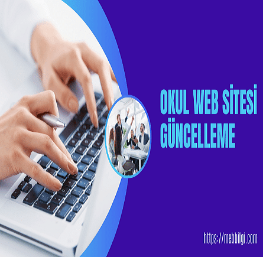
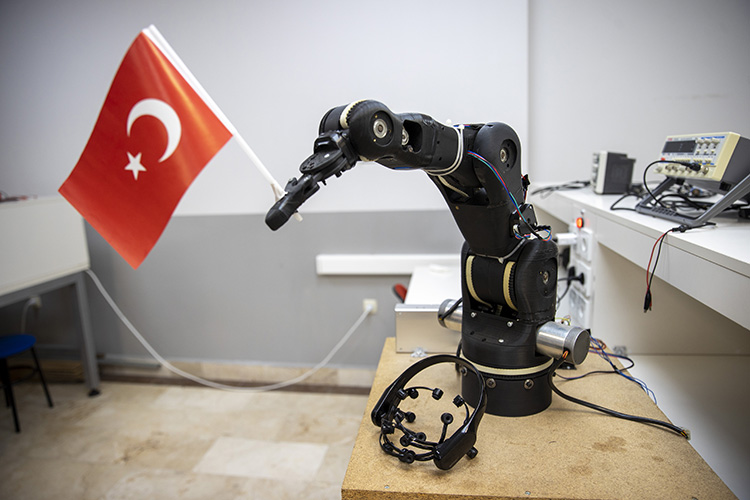
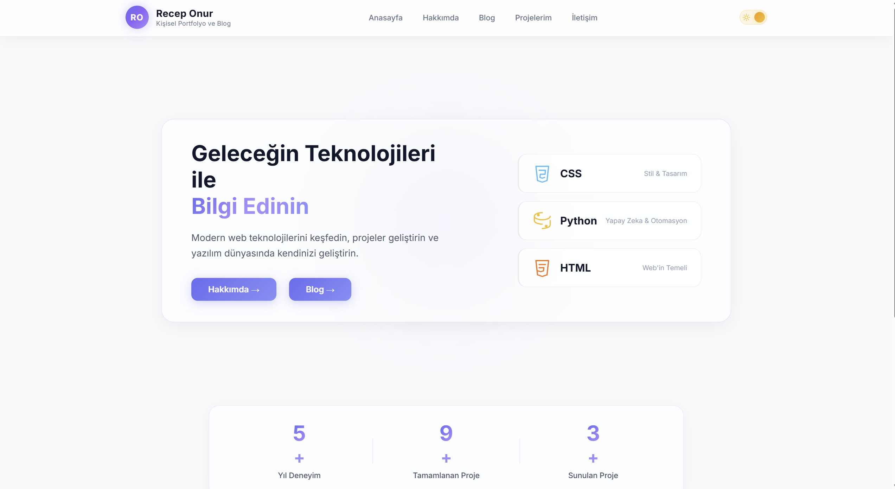
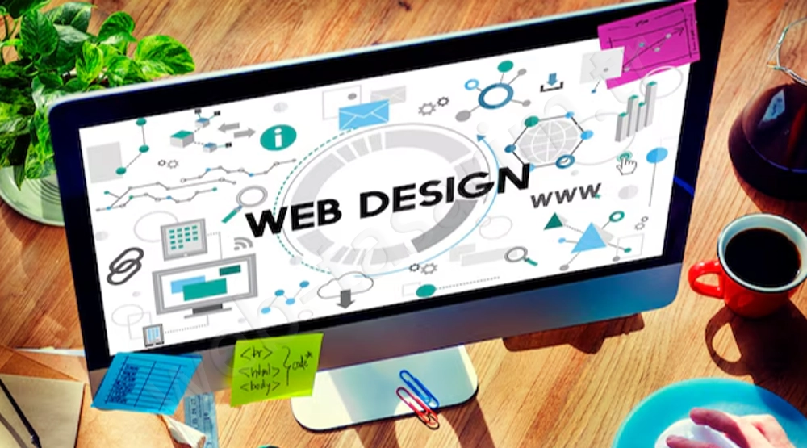
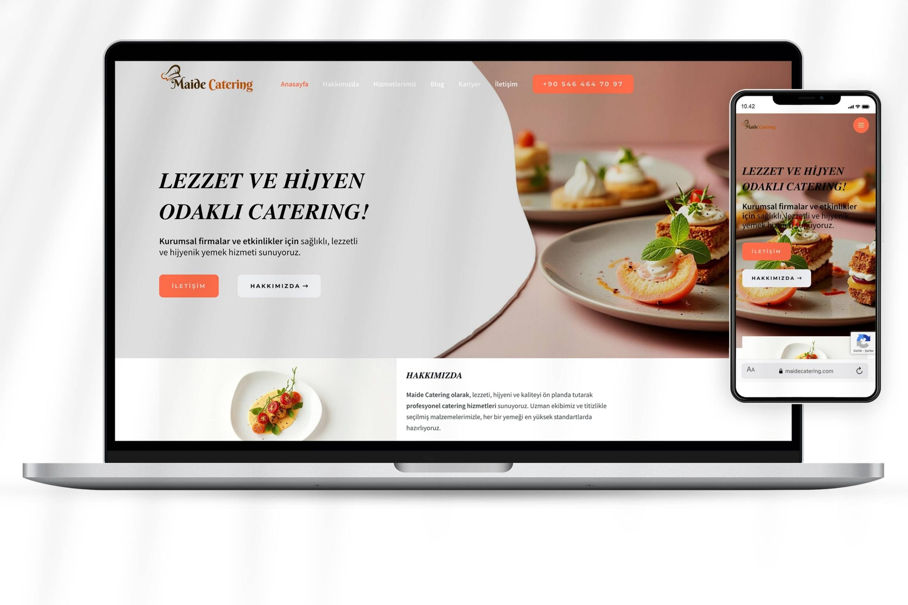

Okul Proje Sitesi
Öğrenim gördüğüm lisenin resmi web sitesinin tasarım ve yayına alınma süreçlerinde aktif rol alarak, okulun dijital kimliğinin oluşturulmasına katkı sağladım.

Modern teknolojiler ve titiz tasarımlarla hayata geçirdiğim seçkin çalışmalarım.
Öğrenim gördüğüm lisenin resmi web sitesinin tasarım ve yayına alınma süreçlerinde aktif rol alarak, okulun dijital kimliğinin oluşturulmasına katkı sağladım.

Belirli bir yükü taşıma ve konumlandırma kapasitesine sahip, 3D tasarım ve Arduino programlama tekniklerini birleştiren yüksek hassasiyetli bir robot kol prototipi geliştirdim.

Okurların size anında ulaşması için GitHub, LinkedIn ve E-Posta kanallarını şık etkileşim kartlarıyla sunuyoruz. Modern hatları ve özel efektleriyle profesyonel kimliğinizi dijital bir kartvizit zarafetinde sergileyen bu yapı, tüm cihazlarda kusursuz erişilebilirlik sağlar. Teknik projeleriniz ile iş ağınız arasında estetik bir köprü kurarak dijital varlığınızı güçlendirir.

Bir ekibin parçası olarak, arayüz tasarımı ve içerik mimarisi konularında sorumluluk üstlendiğim eğitim sitesi projesinde; takım içi koordinasyonu sağlayarak kullanıcı odaklı bir platformun hayata geçirilmesinde aktif rol aldım.

Yazılım geliştirme süreçlerinde Python ve modern web teknolojileri (HTML/CSS) kullanılarak, sistem performansı ve kullanıcı etkileşimi en üst seviyede tutulmuştur.
